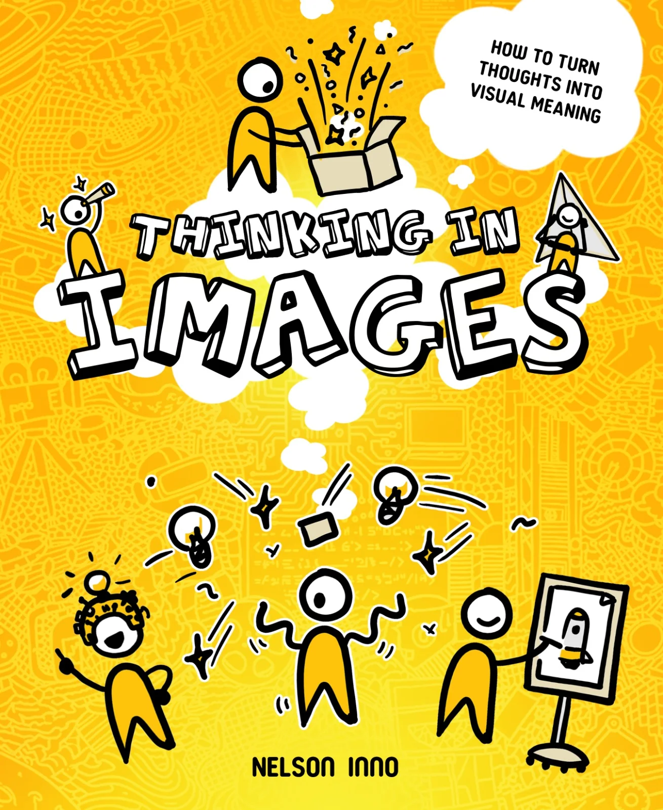
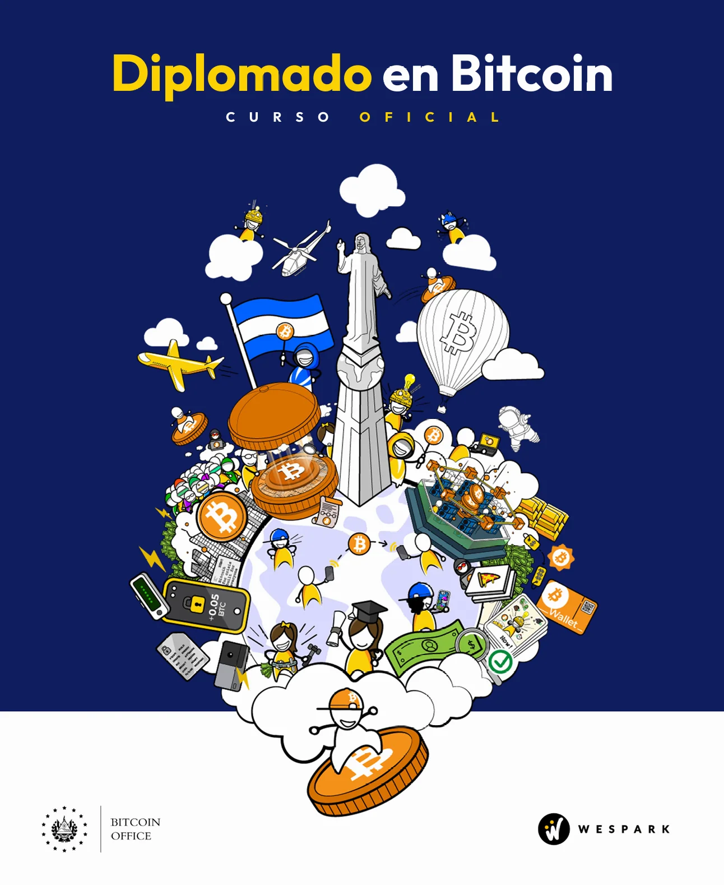

Innovación Inestable
Un libro de filosofía disfrazado de libro de innovación y emprendimiento. Ya leído por +2,000 innovadores en todo el mundo.
Por Nelson Inno · Este libro Comprar o gratisTres libros de Nelson Inno y los quince que él y Adam Nili recomiendan más, filosofía, historia, megatendencias, talleres, negociación, sistema monetario moderno, y Bitcoin.
Un libro de filosofía disfrazado de libro de innovación y emprendimiento. Ya leído por +2,000 innovadores en todo el mundo.
Por Nelson Inno · Este libro Comprar o gratis
Un marco para traducir ideas complejas en comunicación visual. Construido sobre el método Feynman y siete años de pedagogía visual.
Por Nelson Inno · Próximamente Más información
Currículo nacional oficial de Bitcoin de El Salvador. Co-diseñado por WeSpark con la Oficina Nacional de Bitcoin.
Publicado por WeSpark Más informaciónAdam Nili y Nelson Inno han preparado una lista corta de 15 de sus libros favoritos. Cubren temas como filosofía, el progreso de la humanidad, relaciones sociales, megatendencias, vivir bien, diseño de talleres, negociación, el sistema monetario moderno, y Bitcoin.
No hay enlaces de afiliados aquí, Nelson no cree en ganar dinero de las personas que vinieron a leer sobre su libro. Si algo de esta lista te ayuda, lo mejor que puedes hacer es comprarlo en tu librería local o tu biblioteca.